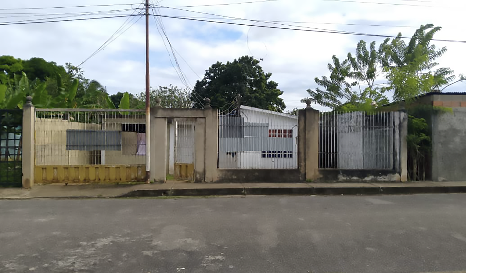

Intervención de fachada con enfoque en privacidad hacia el interior, lenguaje moderno, incorporación de vegetación y carpinterías contemporáneas para reforzar identidad y carácter.


Soy Santino Volponi Rubio, tengo 23 años y me desarrollo en el mundo del diseño y la arquitectura. Me apasiona crear espacios y propuestas que no solo se vean bien, sino que transmitan una idea, una identidad y una intención clara.
Trabajo con mucha atención en los detalles, porque creo que ahí es donde realmente se define la calidad de un proyecto. Me gusta escuchar a cada cliente de manera personalizada, entender qué busca, qué necesita y qué quiere sentir en el espacio que está creando.
Disfruto del proceso de diseño desde la idea inicial hasta el resultado final, buscando siempre que cada proyecto tenga carácter propio y esté pensado específicamente para quien lo va a vivir.
Intervención de fachada con enfoque en privacidad hacia el interior, lenguaje moderno, incorporación de vegetación y carpinterías contemporáneas para reforzar identidad y carácter.
Proyecto que prioriza la calidez a través de iluminación cálida, revestimientos en madera y vegetación, respetando la estructura original de la vivienda.


Propuesta de renovación con intervenciones simples y económicas, enfocadas en modernizar la fachada sin elevar el costo.


Propuesta para completar la imagen final de la vivienda con revestimientos en colores neutros y la incorporación de una terraza moderna con alero envolvente en el segundo piso.
El proceso de diseño se encuentra conformado por dos etapas, cada una atiende exigencias de diferentes escalas y está compuesta por elementos particulares.
Desarrollo inicial de propuestas arquitectónicas para viviendas unifamiliares y multifamiliares, contemplando implantación, normativa y concepto espacial.
Diseño integral de baños, cocinas, dormitorios y remodelación de fachadas, optimizando funcionalidad, estética y confort.
Optimización de proyectos existentes mediante ajustes de diseño, distribución espacial y resolución técnica.
Digitalización y actualización de planos para presentación profesional y correcta documentación técnica.
Imágenes realistas para anteproyectos, remodelaciones de fachadas y mejoras de proyectos con alto impacto visual.
Me guió desde la elección del barrio para comprar el lote, sabiendo cuál se ajustaba a mis necesidades y posibilidades. Destaco la empatía y transparencia a la hora de proyectar.

Nos escuchó y observó para entender la dinámica familiar. El proyecto fue dinámico, ajustándose a nuestros comentarios. No hubo conflicto alguno en 10 meses de obra.
No solo nos entendió proyectualmente sino que también despejó todas las dudas que implica nuestro primer proyecto. Nos acompañó durante toda la obra.